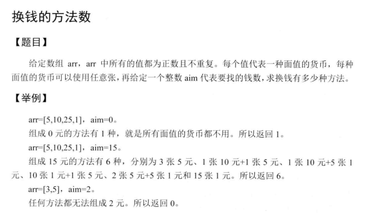

动态规划¶
能用动态规划解决的问题应该满足2个条件： 1. 最优子结构，子问题的最优解可以构成原问题的最优解 2. 反复求解相同的子问题，而不是每次都生成全新的子问题。
动态规划的子问题一般都是重叠的， 分治法解决的子问题一般都是全新的。
1. 整数划分问题¶
一个整数划分成若干整数的和，计算有多少种可能的划分方式。 例如4 = 1 + 1 + 1 + 1 = 2 + 1 + 1 = 2 + 2 = 3 + 1 = 4
dp[i][j] 表示整数 i 的 j 划分的方法数， i 的 j划分的含义是把 i 划分成最大不超过 j的整数的和有多少种划分方法。
如果 j >= i, dp[i][j] = dp[i][i], 因为不可能有超过本身的划分方法，这里不允许有负数。
如果 j < i, dp[i][j] = dp[i][j-1] + dp[i - j][j], i 的 j 划分是两种情况的和：不使用j本身(dp[i][j-1]) + 使用一个j(dp[i-j][j])
int division(int n) {
int **dp = create_matrix(n + 1, n + 1);
fill(dp, n + 1, n + 1, 1);
for (int i = 2; i <= n; i++) {
for (int j = 2; j <= n; j++) {
if (j > i) {
dp[i][j] = dp[i][i];
} else {
dp[i][j] = dp[i][j-1] + dp[i-j][j]
}
}
}
int ans = dp[n][n];
free_matrix(dp);
return ans;
}
2. 背包问题¶
背包问题是有一个约束条件的最优化问题，即在某个指标不超过某个值的情况下，求另外一个指标的最大值，最小值。
2.1 0 - 1 背包¶
2.1.1 使用穷竭搜索¶
#include <iostream>
#include <vector>
#include <algorithm>
using namespace std;
/**
* 0--1 背包问题
* 从第start个物体开始，总重量为weight的背包，返回最大的价值
* @return
*/
int rec(int start,int weight,vector<int> w,vector<int> v,vector<int> &ob){
cout<<"rec("<<start<<","<<weight<<")"<<endl;
int result = 0;
// 物体的最大个数是w.size()-1,如果超过这个，返回0，含义是从第n个
//物体开始，得到的价值是0，因为不能放入进去
if(start == w.size()) {return result;}
//如果当前物体的重量已经大于总重量，那么一定不能放入背包，
//一旦放入重量就超过了
if(w[start] > weight){
result = rec(start+1,weight,w,v,ob);
}
//如果当前物体的重量小于等于最大的重量，那么这个物体可以放入背包，
//尝试放入和不放入两种情况，选择较大的那个；
// if(w[start] <= weight){
// result = max(rec(start+1,weight,w,v),rec(start+1,weight-w[start],w,v)+v[start]);
// }
// 记录物品是否放入了背包
if(w[start] <= weight){
int noput = rec(start+1,weight,w,v,ob);
int putted = rec(start+1,weight-w[start],w,v,ob)+v[start];
if(putted > noput){
result = putted;
cout<<"==="<<"rec("<<start<<","<<weight<<")"<<"==="<<endl;
ob.push_back(start);
}else{
result = noput;
}
}
return result;
}
void print(vector<int> v){
for(auto a : v){
cout<<a<<" ";
}
cout<<endl;
}
int main() {
vector<int> w = {2,1,3,2};
vector<int> v = {3,2,4,2};
int weight = 5;
vector<int> ob;
cout<<rec(0,weight,w,v,ob)<<endl;
print(ob);
return 0;
}
2.1.2 使用动态规划¶
动态规划的递推公式实际上可以从上面的穷竭搜索中得到。
rec(i,j) 表示从第i个物体开始，在不超过j的重量的情况下，最大的价值是多少
设置dp[i][j] = rec(i,j); 则可以知道dp[n][j] = 0; 因为最多只有n-1个物体；
dp[i][j] = dp[i+1][j] 当第i个物体的重量大于j的时候；
dp[i][i] = max( dp[i+1][j] , dp[i+1][j-w[i]]+v[i] ) 当第i个物体能够装进去的时候，分别尝试装入和不装入，取最大值。
/**
* 背包问题的动态规划解法
* @param w
* @param v
* @param weight
* @return
*/
int dp(vector<int> w,vector<int> v,int weight){
int n = w.size();
vector<vector<int>> dp(n+1,vector<int>(weight+1));
for(int i=n;i>=0;i--){
for(int j=0;j<weight+1;j++){
if(w[i] > j){
dp[i][j] = dp[i+1][j];
}else{
dp[i][j] = max(dp[i+1][j],dp[i+1][j-w[i]] + v[i]);
}
}
}
print2(dp);
return dp[0][weight];
}
2.1.3 使用状态转移的观点¶
/**
* 从状态转移的观点来看
* dp[i][j] 表示挑选出从0到i物体，总重量不超过j的状态。dp[0][j]表示选择0个物品时的重大价值
* dp[1][j] 表示选择物体1时候，总重量不超过j的最大的价值
* 所以有dp[0][j] = 0;
* dp[i][j] = dp[i-1][j] 当i-1物体不能放入背包时
* dp[i][j] = dp[i-1][j-w[i]] + v[i] 当i-1物体可以放入背包的时候
* dp[0][j]
* @param w
* @param v
* @param weight
* @return
*/
int dp2(vector<int> w,vector<int> v,int weight){
int n = w.size();
vector<vector<int>> dp(n+1,vector<int>(weight+1));
for(int i=0;i<n;i++){
for(int j=0;j<weight+1;j++){
if(w[i] > j){
dp[i+1][j] = dp[i][j];
}else{
dp[i+1][j] = max(dp[i][j],dp[i][j-w[i]] + v[i]);
}
}
}
print2(dp);
return dp[n][weight];
}
2.2 完全背包¶

完全背包问题可以这样建立递推关系； dp[i][j] 表示前i-1个物体放入背包，总重量不超过j的情况下的最大价值。i=0时表示没有物体。 w[i] 和 v[i] 表示第i个物体的重量和价值。注意这里dp中的i和w,v中的i相差1.也就是dp[i+1]对应的物体的重量和价值分别是w[i],v[i];
dp[i+1][j] := dp[i][j] 第i个物体不放入背包
:= dp[i][j-1*w[i]] + v[i] 第i个物体放入1次的时候
:= dp[i][j-2*w[i]] + 2*v[i] 第i个物体放入2次的时候
...
dp[i+1][j] = dp[i][j] ; 第i个物体无法放入背包的情况 dp[i+1][j] = d[i+1][j-w[i]] + v[i] ; 如果第i个物体可以放入背包，那么最大价值等于 在dp[i+1][j-w[i]]的基础上再放入一个i物品，这时的价值是dp[i+1][j-w[i]] + v[i]; 所以最后的递推关系可以写成： dp[0][j] = 0; dp[i+1][j] = max(dp[i][j],dp[i+1][j-w[i]] + v[i])
/**
* 完全背包问题
* @param w
* @param v
* @param weight
* @return
*/
int dp3(vector<int> w,vector<int> v,int weight){
int n = w.size();
vector<vector<int>> dp(n+1,vector<int>(weight+1));
for(int i=0;i<n;i++){
for(int j=0;j<=weight;j++){
if(j<w[i]){
dp[i+1][j] = dp[i][j];
}else{
dp[i+1][j] = max(dp[i][j],dp[i+1][j-w[i]]+v[i]);
}
}
}
print2(dp);
return dp[n][weight];
}
以上背包的问题的时间复杂度都可以优化到O（nW）也就是物品数量 * 背包容量，空间复杂度可以优化到O（n）. 一般情况下，这样的时间复杂度足够了。但是针对下面这道题，时间复杂度就不够用了，需要另外寻找解题的方法。
有n个重量和价值分别为w[i],v[i]的物品，装入容量为W的背包，求最大价值。 限制条件： n : 1--100 ; w[i] : 1--10000000 ; v[i] : 1--100; W : 1--1000000000
原来背包问题的时间复杂度是O(nW),但是本题'故意'把W设置的很大，使得不能使用原来的方法求解。 仔细分析数据的取值范围发现，v[i]的范围比较小，我们可以转换思路，求解总重量不超过W的情况下价值的最大值， 就是求解相同价值下的总重量的最小值。 dp[i][j] 表示前i-1个物体在价值不超过j的时候的总重量的最小值。 dp[0][j] = INF; 把不存在最小值的情况设置为最大值，这样是方便用min(); dp[0][0] = 0 ; dp[i+1][j] = min(dp[i][j],dp[i][j-v[i]]+w[i])
/**
* 0-1背包的变种
* @return
*/
int dp4(vector<int> w,vector<int> v,int weight){
int n = w.size();
vector<vector<int>> dp(n+1,vector<int>(weight+1));
dp[0][0] = 0;
for(int i=0;i<n;i++){
for(int j=0;j<=weight;j++){
if(j<v[i]){
dp[i+1][j] = dp[i][j];
}else{
dp[i+1][j] = min(dp[i][j],dp[i+1][j-v[i]]+w[i]);
}
}
}
print2(dp);
return dp[n][weight];
}
2.3 多重背包¶
# 每个物品可以使用ci次
def package_ci(n, c, w, v):
N = n + 1
C = c + 1
dp = [ [0]*N for i in range(C)]
for i in range(1, N):
for j in range(1, C):
if j < w[i]:
dp[i][j] = dp[i-1][j]
else:
for k in range(1, j/w[i]):
dp[i][j] = max(dp[i-1][j], dp[i-1][j-k*w[i] + k*v[i]])
return dp[n][n]
3. 二维背包问题¶
一般的背包问题只有一个约束条件，使用二维表格可以完成。 如果有两个约束条件，就必须使用三维的表格才能完成动态规划，这样的问题叫做二维背包。
4. 单词切分¶
给出一个字符串s和一个词典，判断字符串s是否可以被空格切分成一个或多个出现在字典中的单词。 样例
给出
s = "lintcode"
dict = ["lint","code"]
返回 true 因为"lintcode"可以被空格切分成"lint code"
思路一：开一个dp[n+1]表示前i个字母能否用空格分割开(按照字典里面给出的单词)。dp[0]=true表示空字符串能够分割开，dp[1]=true当s[0]在字典中存在时。对于dp[j]来说，逐个向前搜索，看是否有s[i,j]存在与dict中的同时dp[i-1]为真。如果有，dp[j]=true,如果搜索到头还没有，dp[j]=false.这种方法最容易想到，但是时间复杂度高。(不能通过lintcode的所有测试用例)
//[单词切分](http://lintcode.com/zh-cn/problem/word-break/)
bool wordBreak(string s, unordered_set<string> &dict) {
// write your code here
if(s.empty()) return false;
vector<bool> dp(s.size()+1,false);
dp[0] = true;
for (int i = 1; i <= s.size(); ++i) {
if(dict.find(s.substr(i-1,1))!=dict.end() && dp[i-1]){
dp[i] = true;
}
int clen = 2;
for (int j = i - 1; j >= 1 ; --j) {
string ss = s.substr(j-1,clen);
if(dict.find(ss) != dict.end() && dp[j-1]){
dp[i] = true;
break;
}
clen ++;
}
}
return dp[s.size()];
}
思路二：上面的算法每次都会回溯到第一个字符，如果字典的最大的字符的长度远远小于字符串的长度(很常见的情况)，会造成大量的浪费，所以可以改进一下，每次只回溯到字典中最大的字符串长度处，这样就能通过lintcode的大规模的数据了。getMaxLen用来获取字典中最长的字符串的长度。但是该方法当dict中最大字符串的长度很长时，时间复杂度并没有降低。
int getMaxLen( unordered_set<string> &dict){
int maxlen = 0;
for(auto a : dict){
maxlen = max(maxlen,(int)a.size());
}
return maxlen;
}
//[单词切分](http://lintcode.com/zh-cn/problem/word-break/)
bool wordBreak(string s, unordered_set<string> &dict) {
// write your code here
if(s.empty() && dict.empty()) return true;
if(s.empty()) return false;
vector<bool> dp(s.size()+1,false);
int maxlen = getMaxLen(dict);
dp[0] = true;
for (int i = 1; i <= s.size(); ++i) {
if(dict.find(s.substr(i-1,1))!=dict.end() && dp[i-1]){
dp[i] = true;
}
int clen = 2;
int end = max(1,i-1-maxlen);
for (int j = i - 1; j >= end ; --j) {
string ss = s.substr(j-1,clen);
if(dict.find(ss) != dict.end() && dp[j-1]){
dp[i] = true;
break;
}
clen ++;
}
}
return dp[s.size()];
}
5. 换钱的方法数¶

思路： 动态规划。dp[i][j]表示用前i种面值的钱组成j总共有多少中方案。设钱币的面值一共有N中，组成的面值为M，则需要N*(M+1)的数组。第一行表示使用第一种面值的货币组成目标值的方法数量，当j能够被整除时，方法数量为1，否则为0. 第一列表示组成目标值0有多少种情况，无论有几种面值的货币，只有一种方法，就是一个都不用。
递推公式：
-
dp[i][j] = dp[i-1][j] if j < v[i], (当面值为v[i]的货币比目标值还要大的时候，肯定一张v[i]都不能使用，这个时候方法数量等于dp[-1][j]). -
dp[i][j] = dp[i-1][j] + dp[i][j-v[i]] if j >= v[i], (如果目标值比面值为v[i]的钱大，则意味着可以使用v[i]若干次，一直到超过目标值； 在这种情况下，组成目标值的总方法数量为以下几种情况的和： 不使用第i中货币组成j, 方法数量是dp[i-1][j]; 使用第i种货币组成j的数量，dp[i][j-v[i]], 这个式子可以这样理解： 首先使用一张v[i],然后用前i中货币组成剩下的j-v[i]目标值，这个值之前计算过，可以直接写出来，就是dp[i][j-v[i]];
#include <iostream>
#include <vector>
using namespace std;
int getNum(vector<int> v,int aim){
vector<vector<int> > dp(v.size(),vector<int>(aim+1));
//初始化第一列
for(int i=0;i<v.size();++i){
dp[i][0] = 1;
}
//初始化第一行
for(int j=1;j<=aim;j++){
dp[0][j] = j%v[0]==0 ? 1 : 0;
}
for(int i=1;i<v.size();++i){
for(int j=1;j<=aim;++j){
dp[i][j] = j-v[i]>=0 ? dp[i-1][j]+dp[i][j-v[i]] : dp[i-1][j];
}
}
//打印动态规划表格
for(int i=0;i<dp.size();++i){
for(int j=0;j<dp[0].size();++j){
cout<<dp[i][j]<<"\t";
}
cout<<endl;
}
return dp[v.size()-1][aim];
}
int main() {
vector<int> v = {5,2,3,7};
int aim = 7;
std::cout << getNum(v,aim) << std::endl;
return 0;
}
6. 相关题目¶
| LeetCode题目 | 难度 |
|---|---|
| 1143. 最长公共子序列 | 中等 |
| 516. 最长回文子序列 | 中等 |
| 1218. 最长定差子序列 | 中等 |